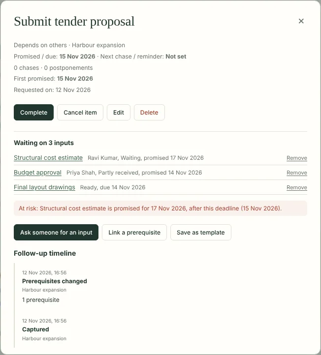
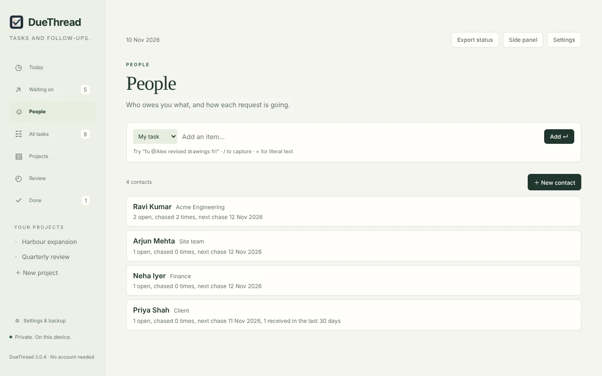

Every input, against the task it feeds
Ask several people for inputs to one task, and link the work that has to come first. Each request keeps its own person, promised date, chase date and history. The task shows as waiting until every input is in.

What it tells you
- What's blocking this? Each task lists the inputs it's still waiting on and who owes them.
- At risk. A task is flagged when an input is promised after its deadline, is overdue, or has no date agreed close to the deadline.
- What it unblocks. When an input arrives, you see which tasks can now move.
- Partly received, or received but not yet checked. Half a delivery doesn't close a request.
- The right person. Two people with the same name stay separate; each contact can carry an organisation.
- A view for each person. What each person owes you, what's overdue, how often you've chased and when you chase next.

Free and Pro
Free
For everyday tasks and follow-ups.
- Unlimited tasks, follow-ups, projects and reminders
- Promised dates kept separate from chase dates
- Review of what's overdue and ready to chase
- Workflow tracking on 3 open tasks at a time
Pro
US$29 a year
- Everything in Free
- Workflow tracking on every task
- The People view
- New Pro features as they arrive
One payment for a year. No subscription and no automatic renewal. Renewing early adds a year to your current end date, so no days are lost. Prices are in US dollars; checkout may show your local currency and any tax due.
How buying works
- Install DueThread from the Chrome Web Store, if you haven't already. Pro needs version 3.0.4 or later; Chrome updates it automatically.
- Click Buy DueThread Pro. Payment is handled by Dodo Payments, our payment provider and merchant of record.
- After paying, you come back to a page with your licence key. Copy it and keep it somewhere safe.
- In DueThread, open Settings, choose Enter licence key and paste it.
DueThread checks the key on your computer, without connecting to anything. There is still no account, and your tasks never leave your computer.
What happens when a year ends
Nothing you created is locked or deleted. You can still see and edit every task, request and contact. Tracking new tasks goes back to the free limit of 3 at a time, and the People view is hidden until you renew.
Questions
See Pro on the support page, or write to support@sensifty.com.